UNIVERSIDAD CONTINENTAL
Facultad de Ingeniería · Ingeniería de Sistemas e Informática
INFORME TÉCNICO DE LABORATORIO 13
GESTIÓN DE CONFIGURACIÓN DE SOFTWARE (UNIDAD IV)
Administración del cambio, gestión de versiones y entregas, construcción del sistema
y herramientas del proceso con la suite gratuita de GitHub, aplicadas al proyecto «Anemia Junín»
| Asignatura | Procesos de Software (ASUC01702) · 2026-20 |
|---|
| Docente | Guevara Jimenez, Jorge Alfredo |
|---|
| Proyecto | Sistema para la detección temprana y el seguimiento de la anemia infantil en zonas rurales de Junín (versión v4.0.1) |
|---|
| Integrantes | Porras Veli, Ricardo (76659572) — Leader / Software Architect
Auqui Huincho, Tania Tifani (75280128) — Backend, Data, Frontend & Mobile
Huamani Rodriguez, Jean Piero (72156889) — Process Analyst & QA Lead |
|---|
| Repositorio | https://github.com/woshtsu/ProcesosSoftwareAnemia |
|---|
| Fecha de corte | 14/11/2026, 23:00 (versión final revisada tras acciones nocturnas de verificación SCM; corte previo al 14/11 tarde) |
|---|
Contenido
- Introducción, roles y objetivos
- Ejes temáticos de la Unidad IV y su implementación en GitHub
- Actividad 1: línea base y registro de cambios (captura obligatoria 1)
- Actividad 2: control de cambios, protección de ramas y revisión de código (capturas 2 y 3)
- Actividad 3: estrategia de ramificación GitFlow (captura 4)
- Actividad 4: integración continua con GitHub Actions (captura 5)
- Actividad 5: versionamiento semántico y GitHub Releases (captura 6)
- Matriz de trazabilidad SCM unificada
- Indicadores del proceso de gestión de la configuración
- Autoevaluación con la rúbrica
- Conclusiones y lecciones aprendidas
- Anexos: correspondencia de evidencias, reproducibilidad y enlaces
Cómo leer las evidencias. Hay dos tipos. Las capturas de páginas de GitHub se tomaron del repositorio el 14/11/2026 (tanto en modo público como en sesión del propietario para ajustes de reglas). Las capturas en fondo oscuro son la salida real de comandos git y gh sobre el mismo repositorio, con el comando visible en la primera línea. Ambas se regeneran con el script capturar_evidencias_scm.py (Anexo B), con salidas archivadas en evidencias/salidas_cli.json. Para garantizar la trazabilidad de la mejora continua, cada hallazgo inicial mantiene su captura original de la tarde archivada en evidencias/antes_2026-11-14_tarde/, seguida de la evidencia del estado resultante tras las acciones nocturnas.
1. Introducción, roles y objetivos
«Anemia Junín» es una aplicación web progresiva con API FastAPI y arquitectura hexagonal que ayuda al personal de salud a registrar a los niños con anemia, programar sus controles, recibir alertas, trabajar sin conexión y registrar las barreras al tratamiento. Se construyó en cuatro incrementos y un hotfix de producción (v1.0-PMV a v4.0.1, 76 de 133 puntos de historia) y está desplegada en Render con base de datos en Supabase. La semana 13 abre el Sprint 6, dedicado al Incremento 5 (modelo predictivo).
Este informe documenta cómo el equipo aplica la gestión de configuración de software (SCM) con la suite gratuita de GitHub: qué existía, qué se configuró en el laboratorio, qué evidencia lo demuestra y qué sigue pendiente. No se presentan como hechas configuraciones que no estén respaldadas por la API o capturas del repositorio.
| Rol en la SCM | Integrante | Responsabilidades |
|---|
| Comité de control de cambios (CCB) y propietario del repositorio | Porras V. (Leader / Software Architect) | Evalúa y aprueba las RFC; configura las reglas de rama y excepciones; integra las PR en main y develop. |
| Desarrolladora | Auqui H. | Implementa los cambios en ramas feature/* y fix/*; abre las PR con la plantilla y subsana observaciones. |
| Gestor de configuración y QA | Huamani R. (Process Analyst & QA Lead) | Registra las RFC, revisa las PR, mantiene el pipeline, publica las releases y audita la configuración. |
Objetivo general. Aplicar las técnicas de SCM y la mejora continua en el proyecto de asignatura utilizando la suite gratuita de GitHub.
Objetivos específicos (de la guía, con el indicador con el que se mide cada uno en la sección 9):
- Estructurar el control de cambios con plantillas y revisión por pares → RFC registradas y evaluadas formalmente; PR con revisión aprobada.
- Configurar la protección de código y la ramificación GitFlow → ruleset activo en
main y develop; PR que pasan por develop.
- Automatizar la integración continua y auditar la calidad antes de integrar → ejecuciones del pipeline en verde antes de cada merge.
- Publicar liberaciones con etiquetado SemVer → etiquetas y releases con notas y paquetes de artefactos adjuntos.
2. Ejes temáticos de la Unidad IV y su implementación en GitHub
| Eje temático | Herramienta de la suite de GitHub | Elementos de configuración del proyecto |
|---|
| 1. Administración del cambio | Issues con plantilla y etiquetas; Pull requests con plantilla; Rulesets | .github/ISSUE_TEMPLATE/change_request.md, .github/PULL_REQUEST_TEMPLATE.md, etiquetas change-request, pendiente-evaluacion, aprobado, rechazado, implementado; ruleset ownermerge activo. |
| 2. Gestión de versiones y entregas | Ramas, Tags, Releases, Insights → Network | Ramas main, develop, feature/*, fix/*, hotfix/*; etiquetas v1.0-PMV a v4.0.1 y archivo/*; 6 releases; convención en CONTRIBUTING.md. |
| 3. Construcción del sistema | GitHub Actions | .github/workflows/ci.yml: Ruff, pytest con cobertura, pruebas de arquitectura, integración con PostgreSQL y E2E con Playwright; imagen Docker; verificación de esquema y solicitud de despliegue. |
| 4. Herramientas del proceso | API de GitHub y CLI gh | Auditoría reproducible del proceso: capturar_evidencias_scm.py (salidas en JSON y capturas contrastadas). |
3. Actividad 1: línea base y registro de cambios
3.1 Paso 1.1: plantilla de solicitud de cambio
La plantilla se incorporó a la línea base el 06/11/2026 con la PR #13 (Figura 1). Sigue la estructura de la guía (descripción, análisis de impacto y criterios de aceptación) y la amplía con el impacto en el alcance, criterios Dado-Cuando-Entonces y una sección de evaluación que completa el CCB. Al crear el issue, GitHub le asigna las etiquetas change-request y pendiente-evaluacion. El ciclo de vida de la RFC se controla con etiquetas (Figura 2): pendiente-evaluacion → aprobado o rechazado → implementado.
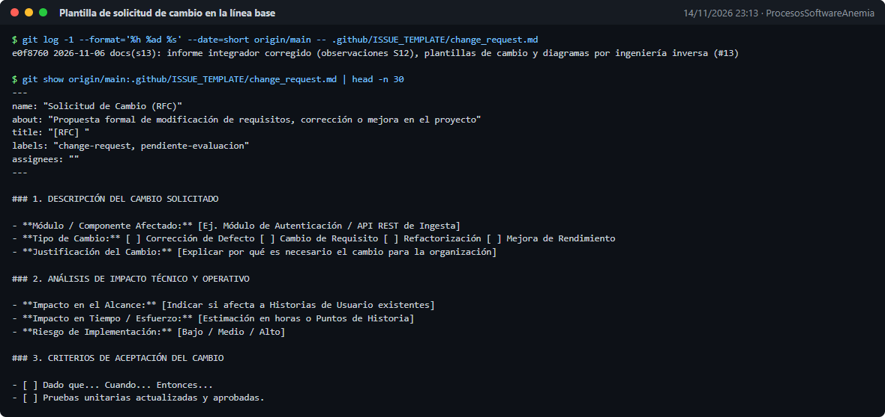
Figura 1. Commit que incorporó la plantilla a main (PR #13, 06/11/2026) y contenido de .github/ISSUE_TEMPLATE/change_request.md leído desde origin/main.
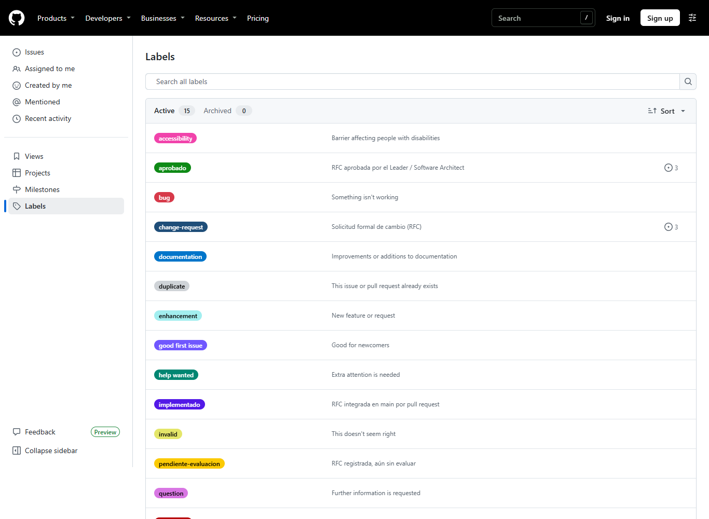
Figura 2. Etiquetas del repositorio: además de las de GitHub, las del flujo de cambio (change-request, pendiente-evaluacion, aprobado, implementado) con su descripción.
3.2 Paso 1.2: registro de cambios en GitHub Issues
CAPTURA OBLIGATORIA 1 · actividad1_issue_change_request.png

Figura 3. RFC #18 «Roles en el JWT y políticas RLS por establecimiento» registrada con la plantilla: número asignado, etiquetas change-request y pendiente-evaluacion, módulo afectado, tipo de cambio, justificación (hallazgo OWASP H-1), impacto (5 SP, riesgo alto) y criterios de aceptación.
Las RFC no son ejemplos: provienen de hallazgos reales del proyecto (observaciones del docente a S12, autoevaluación CMMI H2, H5 y H10, auditoría OWASP Top 10:2025 y el plan del Sprint 6).
Tabla 1. Registro de solicitudes de cambio en GitHub Issues (actualizado al 14/11/2026, 23:00).
| Issue | Solicitud de cambio (RFC) | Origen | Impacto / riesgo | Estado en GitHub | Responsable |
|---|
| #14 | Corregir el informe integrador según las observaciones del docente a S12 | Observaciones del docente | 5 SP / Bajo | Cerrada (implementado) | Porras V. · Huamani R. |
| #15 | Adoptar GitFlow, convención de commits y plantillas de cambio y de PR | CMMI H2 y H5; guía S13 | 3 SP / Bajo | Cerrada (implementado) | Porras V. · Huamani R. |
| #16 | (duplicado de #15) | Registro duplicado | — | Cerrada como duplicado | Huamani R. |
| #17 | Regenerar los diagramas de arquitectura y de datos por ingeniería inversa | CMMI H10 | 2 SP / Bajo | Cerrada (implementado) | Porras V. · Huamani R. |
| #18 | Roles en el JWT y políticas RLS por establecimiento | OWASP H-1 (A01, alta) | 5 SP / Alto | Abierta (aprobado) | Porras V. · Auqui H. |
| #19 | Cabeceras de seguridad HTTP y CSV sin fórmulas | OWASP H-2 y H-3 | 3 SP / Medio | Abierta (aprobado) | Porras V. · Auqui H. |
| #20 | Preparar el dataset versionado del HIS para el Incremento 5 | Desvío del plan del Sprint 5 | 3 SP / Medio | Abierta (aprobado) | Porras V. |
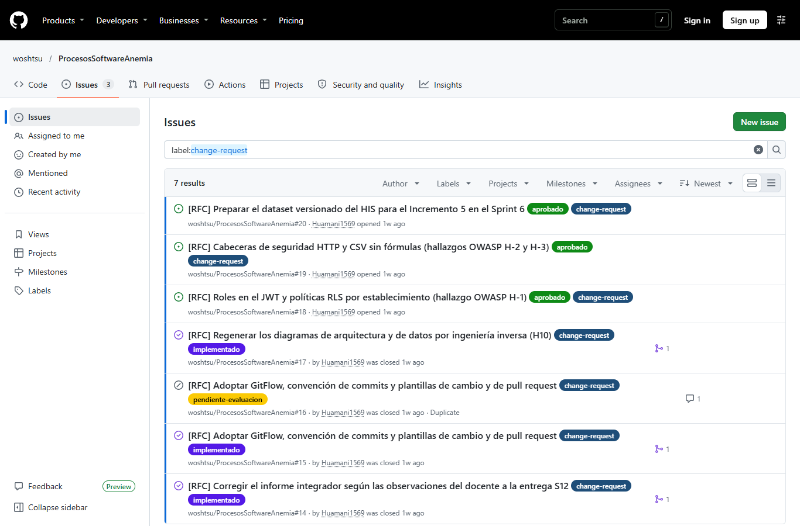
Figura 4. Lista de issues filtrada por label:change-request: las siete RFC, abiertas y cerradas, con sus etiquetas.

Figura 5. Solicitudes de cambio consultadas con gh issue list al corte de la tarde (14/11, 13:10): las siete conservaban pendiente-evaluacion, evidenciando la falta de registro de decisiones.

Figura 6. Evaluación formal de las RFC tras las acciones nocturnas (14/11, 23:00): #18, #19 y #20 evaluadas con etiqueta aprobado por el Leader; #14, #15 y #17 con implementado; #16 permanece como duplicado cerrado.
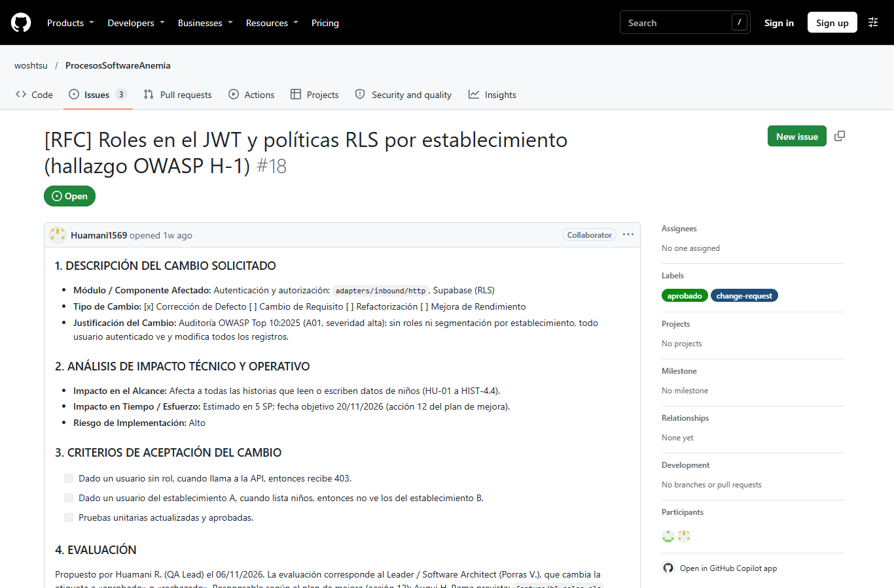
Figura 7. RFC #18 en GitHub Issues con la etiqueta aprobado asignada formalmente por el Leader tras el análisis de impacto técnico.
Evolución del hallazgo. En la auditoría inicial de la tarde, la evaluación no dejaba rastro: ninguna RFC había pasado a aprobado o rechazado. En la noche del 14/11, el Leader evaluó formalmente el 100 % de las RFC válidas (6 de 6 sin contar el duplicado #16): las tres abiertas (#18, #19 y #20) fueron aprobadas con base en el análisis de impacto para el Sprint 6. Las tres cerradas (#14, #15 y #17) se habían resuelto con la PR #13 el 06/11 sin registrar su aprobación; su evaluación es, por tanto, retroactiva: el 14/11 se les asignó la etiqueta implementado, que deja constancia de la decisión del CCB a posteriori (dominio 3 del PDCA).
4. Actividad 2: control de cambios, protección de ramas y revisión de código
4.1 Paso 2.1: reglas de protección de ramas
GitHub ofrece hoy dos mecanismos equivalentes: branch protection rules y rulesets. El propietario configuró el ruleset ownermerge sobre main y develop con parte de las reglas del Paso 2.1 de la guía: Require a pull request before merging con 1 aprobación obligatoria, bloqueo del borrado de la rama (deletion) y del force push (non-fast-forward). Desviación respecto de la guía: el ruleset no incluye la regla que exige que los checks de Actions pasen antes de fusionar (Require status checks to pass, punto 3 del Paso 2.1); por eso el CI informa, pero todavía no bloquea la fusión. Añadir esa regla con el trabajo calidad-y-pruebas es una acción pendiente del propietario del repositorio (Leader). Para evitar que el proyecto quede bloqueado al tener un único administrador que además integra cambios, se configuró una excepción de administración (bypass list) exclusiva para el rol Repository admin.
CAPTURA OBLIGATORIA 2 · actividad2_branch_protection_rules.png

Figura 8. Panel Settings → Rulesets del repositorio (captura del propietario, 14/11, 22:56): ruleset ownermerge activo (Active), con 3 branch rules (deletion, non_fast_forward y pull_request con 1 aprobación requerida), aplicando sobre 2 ramas (main y develop) y excepción (bypass) configurada para el rol Repository admin.

Figura 9. Estado del ruleset ownermerge al corte de la tarde (14/11, 13:10): enforcement: disabled, sin excepciones y main figurando como no protegida (protected: false).
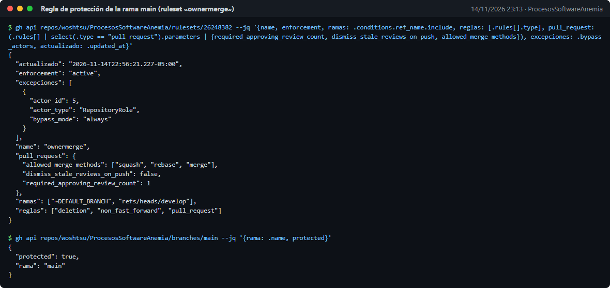
Figura 10. Verificación del ruleset activo mediante la API de GitHub (14/11, 22:56): enforcement: active sobre ~DEFAULT_BRANCH y refs/heads/develop, excepción para RepositoryRole (id 5, Repository admin) y confirmación de rama protegida protected: true en main.
Situación real y resolución. Durante la tarde el ruleset estaba desactivado porque el administrador no podía aprobar sus propias PR en GitHub, lo que generaba riesgo de bloqueo. En la noche del 14/11, el propietario activó formalmente el ruleset configurando la excepción para Repository admin. Con ello, la línea base queda blindada contra push directos de colaboradores, mientras las excepciones quedan trazadas en la API (dominio 5 del PDCA).
4.2 Paso 2.2: plantilla de pull request
La plantilla (Figura 11) obliga a resumir el cambio, vincular la RFC con Closes # y marcar la Definición de Terminado. La DoD de la guía se adaptó a las herramientas del proyecto: ruff check, pytest --cov con cobertura ≥ 80 %, pruebas de tests/arquitectura para el desacople del dominio hexagonal, evidencias funcionales y análisis estático (Ruff y SonarCloud).
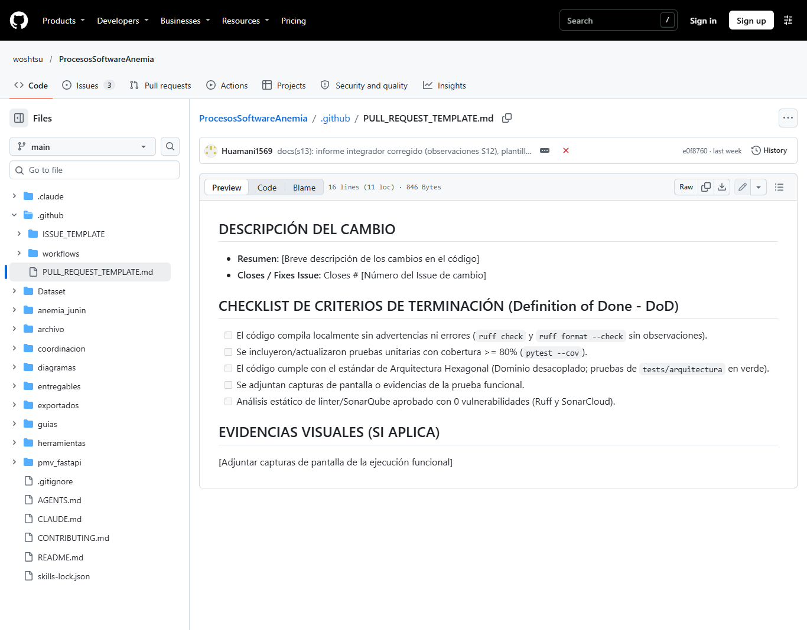
Figura 11. .github/PULL_REQUEST_TEMPLATE.md en main.
4.3 Inspección de código y aprobación de la pull request
CAPTURA OBLIGATORIA 3 · actividad2_pull_request_code_review.png
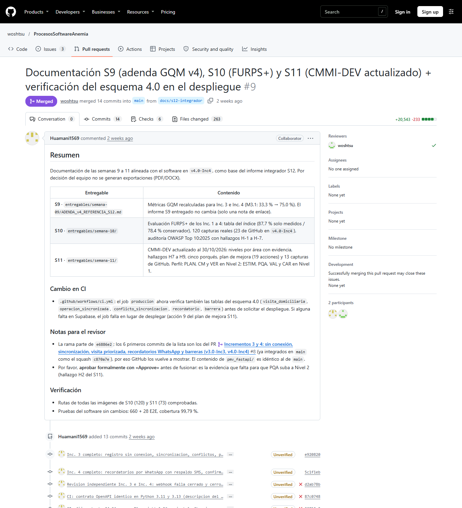
Figura 12. PR #9 (docs/s12-integrador → main): revisión aprobada por el Leader (marca verde en Reviewers), 6 checks automatizados y pedido explícito de «Approve» en las notas para el revisor. Es la única PR del repositorio con aprobación registrada formalmente.
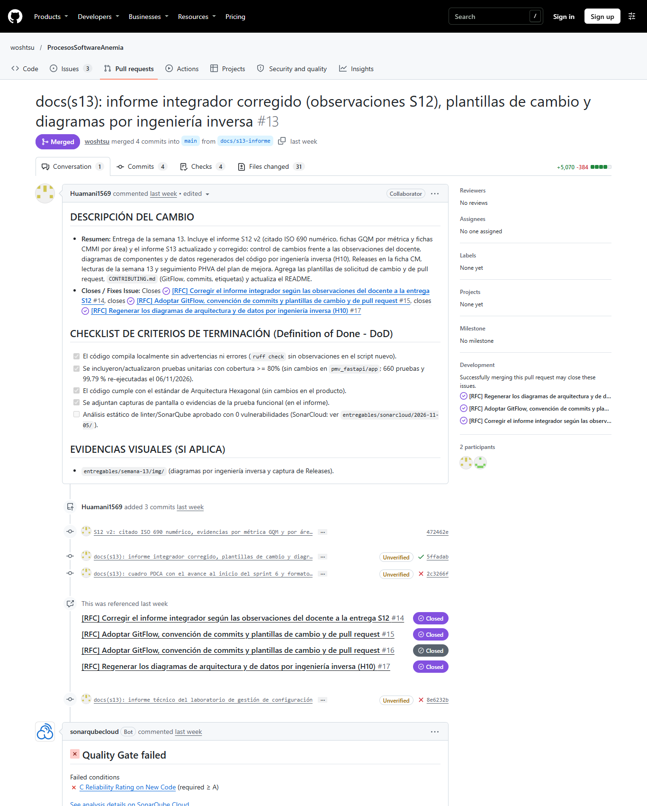
Figura 13. PR #13: primera PR que usa la plantilla completa y se vincula a sus RFC (Closes #14, #15 y #17, que aparecen en Development), con la DoD marcada. Se integró sin revisores («No reviews») y con el Quality Gate de SonarCloud en rojo, lo que demuestra que la plantilla sola no basta.
Para medir la revisión por pares se auditaron las PR integradas del repositorio con la API (Figuras 14 y 15).

Figura 14. Auditoría de las 19 PR integradas al corte de la tarde: solo 1 de 19 con «APPROVED» (PR #9) y solo 1 de 19 vinculada formalmente (PR #13).
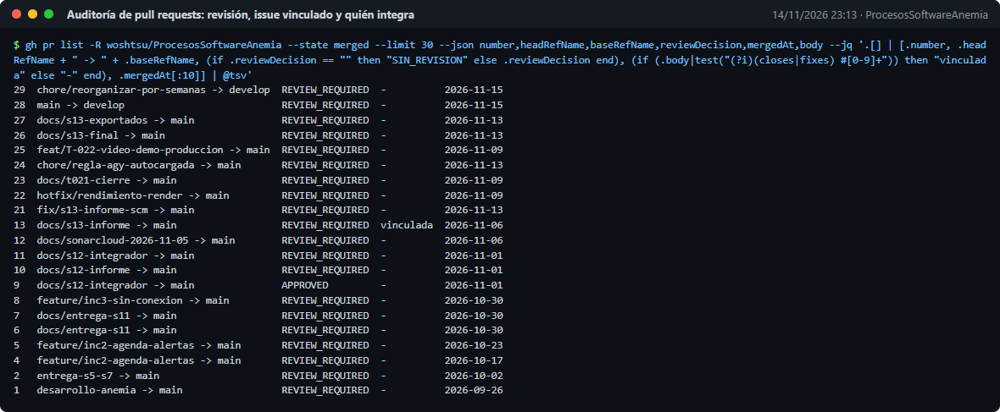
Figura 15. Auditoría ampliada tras incorporar las PR #28 y #29 hacia develop: ambas se integraron con REVIEW_REQUIRED utilizando la excepción de administrador. Se mantiene la transparencia de que ninguna PR posterior al 06/11 cuenta con aprobación formal de un par.
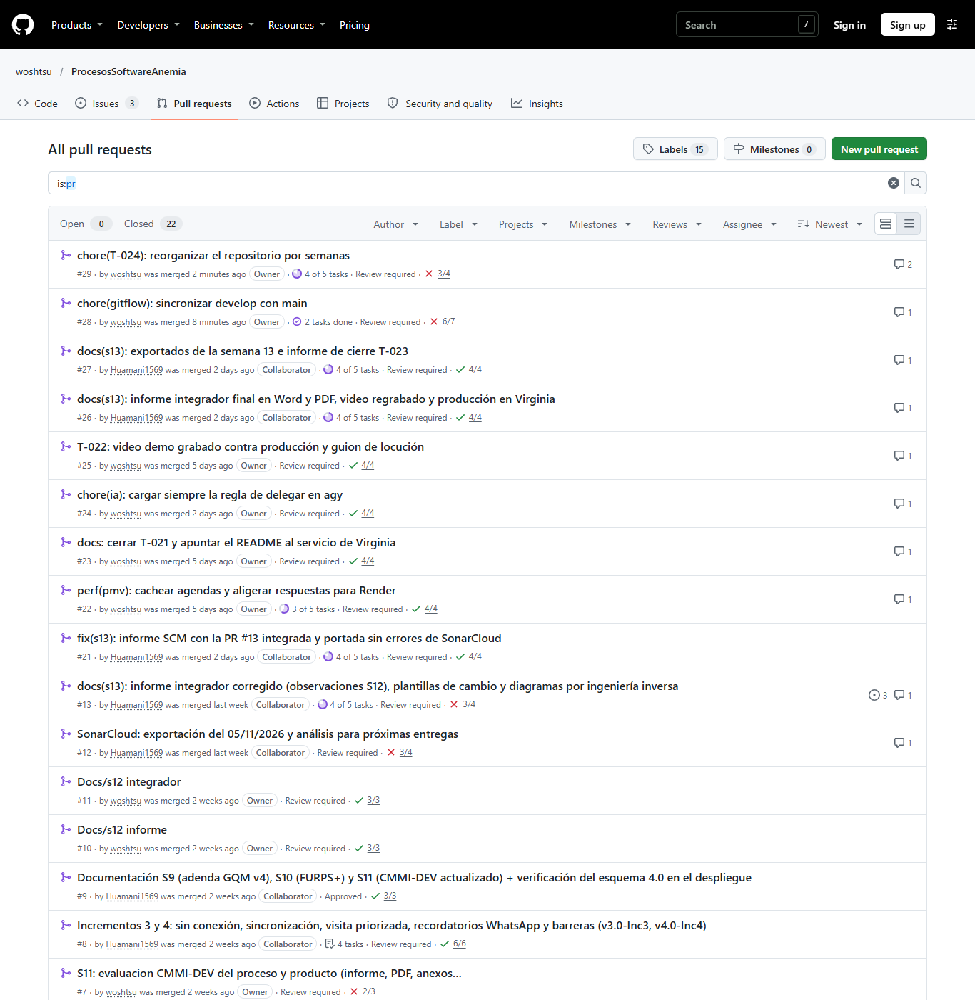
Figura 16. Pestaña Pull requests (0 abiertas, 22 cerradas): títulos con formato convencional desde la PR #13 y casillas de la DoD completadas.
Lectura honesta. La disciplina de integrar por PR se consolidó plenamente (100 % desde el 06/11), pero la revisión formal por pares sigue siendo el principal desafío organizativo. Las PR #28 y #29 hacia develop fueron integradas mediante la excepción de administrador sin aprobación de un par. El ruleset activo ahora exige 1 aprobación; la meta del Sprint 6 es que ninguna PR se integre sin el «Approve» de Auqui H. o Huamani R. (dominio 4 del PDCA).
5. Actividad 3: estrategia de ramificación GitFlow
5.1 Paso 3.1: ejecución de la ramificación
El Incremento 1 se desarrolló con GitFlow: cada historia o defecto en su rama, integrada en develop con un merge explícito y cerrada con release: v1.0-PMV antes de llegar a main por la PR #2. La Figura 17 es el historial real. Los comandos del equipo equivalen a los de la guía:
git checkout -b develop && git push origin develop
git checkout -b feature/hu03-validacion-nts develop
git commit -m "feat(hu03): reglas clínicas de ajuste por altitud y clasificación de anemia"
git push origin feature/hu03-validacion-nts
git checkout develop && git merge --no-ff feature/hu03-validacion-nts # "Merge feature/hu03-validacion-nts en develop"

Figura 17. git log --graph hasta la etiqueta v1.0-PMV: ramas feature/infra-ci-bd, feature/hu03-validacion-nts, feature/hu01-hu05-expediente, test/e2e-y-carga, fix/def-01-reporte-n-mas-1, fix/def-02-zona-horaria y docs/arquitectura-evidencias integradas en develop, con commits semánticos.
5.2 Red de ramas y commits
CAPTURA OBLIGATORIA 4 · actividad3_gitflow_network_graph.png
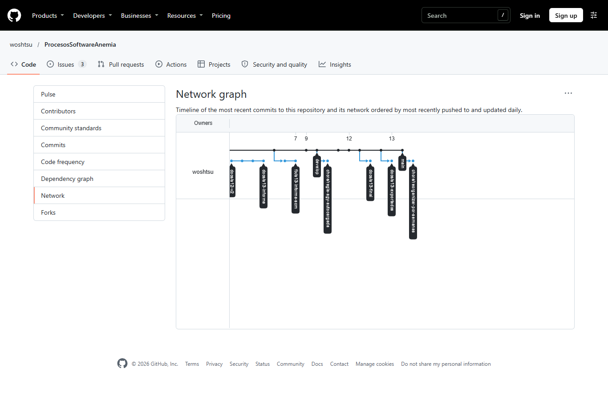
Figura 18. Insights → Network: main como línea base y ramas de trabajo históricas derivándose de ella e integrándose. Nota técnica: el gráfico de red de GitHub se actualiza una vez al día de forma asíncrona en los servidores centrales de GitHub, por lo que todavía muestra las ramas remotas antes de la limpieza nocturna.

Figura 19. Ramas remotas al corte de la tarde (14/11, 13:10): 22 ramas activas con prefijos divergentes y develop 5 commits detrás de main.
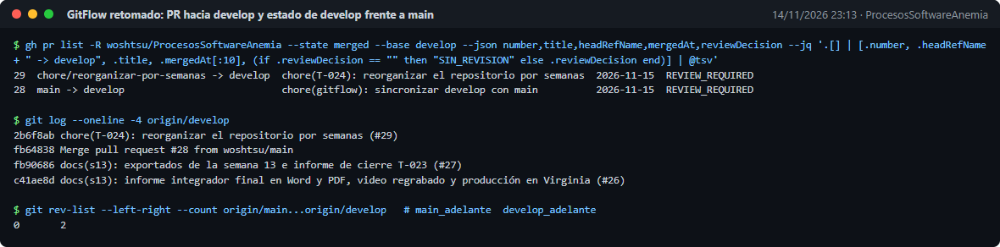
Figura 20. Reanudación de GitFlow en develop (14/11, noche): PR #28 (sincronización con main) y PR #29 (T-024) integradas en develop. develop queda 0 commits detrás y 2 delante de main (salida 0 2).

Figura 21. Limpieza de ramas remotas y respaldo histórico: se eliminaron 17 ramas remotas ya integradas o cerradas, dejando únicamente main y develop activas. Previo a la eliminación, se creó la etiqueta anotada archivo/docs-s12-correcciones para respaldar los 14 archivos de la rama S12.
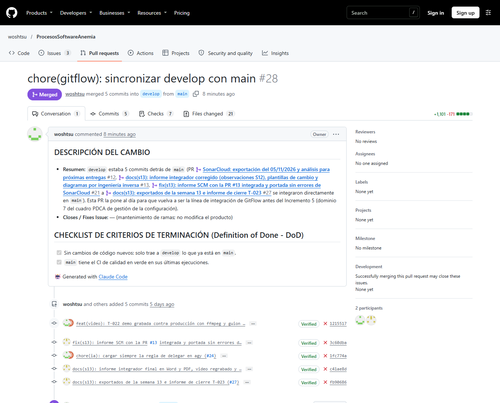
Figura 22. PR #28 (main → develop): sincronización de develop con main mediante merge commit para restaurar la línea de integración de GitFlow.
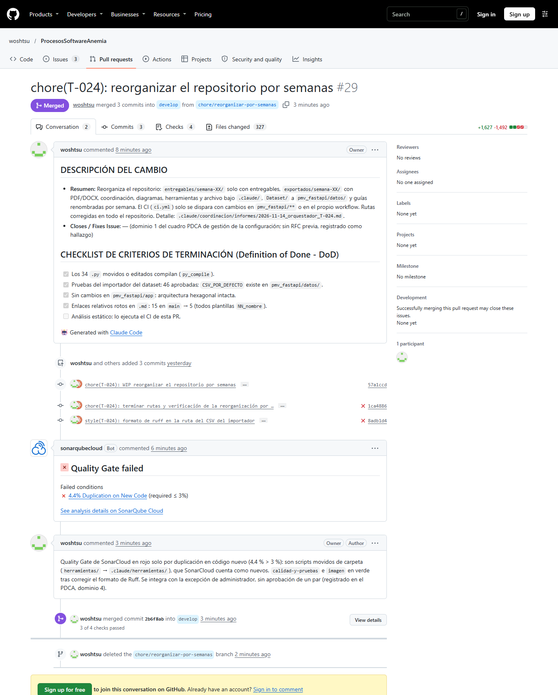
Figura 23. PR #29 (chore/reorganizar-por-semanas → develop): integración de la reorganización por semanas (T-024) a través de develop.
Tabla 2. Trazabilidad entre ramas e historias de usuario o cambios (ramas y commits reales actualizados).
| Historia / cambio | Rama | Responsable | Commits semánticos (ejemplos) | Destino |
|---|
| Habilitadores T7 a T9 | feature/infra-ci-bd | Huamani R. | ci: pipeline de GitHub Actions…; build: esquema PostgreSQL… | develop → main (PR #2) |
| HU-03 / RF-03 | feature/hu03-validacion-nts | Huamani R. | feat(hu03): reglas clínicas de ajuste por altitud… | develop → main (PR #2) |
| HU-01, 02, 04 y 05 | feature/hu01-hu05-expediente | Huamani R. | feat(hu01-hu05): API REST con errores por campo… | develop → main (PR #2) |
| DEF-01 y DEF-02 | fix/def-01-reporte-n-mas-1, fix/def-02-zona-horaria | Huamani R. | fix(DEF-01): elimina consultas N+1… (p95 2200 ms → 74 ms) | develop → main (PR #2) |
| HIST-2.1 a 2.4 | feature/inc2-agenda-alertas | Huamani R. y Auqui H. | «Inc. 2 avance 50%…» (sin formato convencional) | main (PR #4 y #5) |
| HIST-3.x, VIS-3.5, HIST-4.x | feature/inc3-sin-conexion | Huamani R. y Auqui H. | «Inc. 3 completo…», «Inc. 4 completo…» | main (PR #8, squash) |
| RFC #14, #15, #17 | docs/s13-informe | Huamani R. | docs(s13): informe integrador corregido… | main (PR #13) |
| Rendimiento en Render | hotfix/rendimiento-render | Porras V. | perf(pmv): cachear agendas y aligerar respuestas… | main (PR #22, tag v4.0.1) |
| Video de la demo (T-022) | feat/T-022-video-demo-produccion | Porras V. | feat(video): T-022 demo grabada contra producción… | main (PR #25) |
| Sincronización GitFlow | main | Porras V. | chore(gitflow): sincronizar develop con main (#28) | develop (PR #28) |
| Reorganización del repositorio (T-024) | chore/reorganizar-por-semanas | Porras V. | chore(T-024): reorganizar el repositorio por semanas (#29) | develop (PR #29) |
| T-025: Actualización SCM y PDCA | docs/t025-scm-pdca | Huamani R. · Porras V. | docs(t025): actualizar informe SCM y PDCA nocturno | develop (prevista 15/11/2026) |
| RFC #18 y #19 (aprobadas) | feature/h1-roles-rls, feature/h2-h3-cabeceras-csv (previstas) | Auqui H. | — | develop |
5.3 Disciplina de integración en la línea base
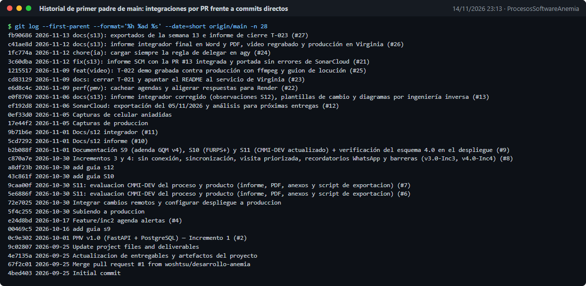
Figura 24. Historial de primer padre de main: desde el 06/11/2026 cada integración lleva el número de su PR; antes hay commits directos («Capturas de produccion», «Subiendo a produccion», «add guia s12»).

Figura 25. Indicadores calculados con git log: integraciones en main por PR (9/19 antes del 06/11, 9/9 después) y commits convencionales. La medición oficial del hallazgo es 20/24 (83 %) post-06/11 y 13/60 (22 %) histórico; tras la eliminación de las 17 ramas remotas, git log --all ya no incluye esos commits y arroja 9/11 (82 %) y 13/53 (25 %).
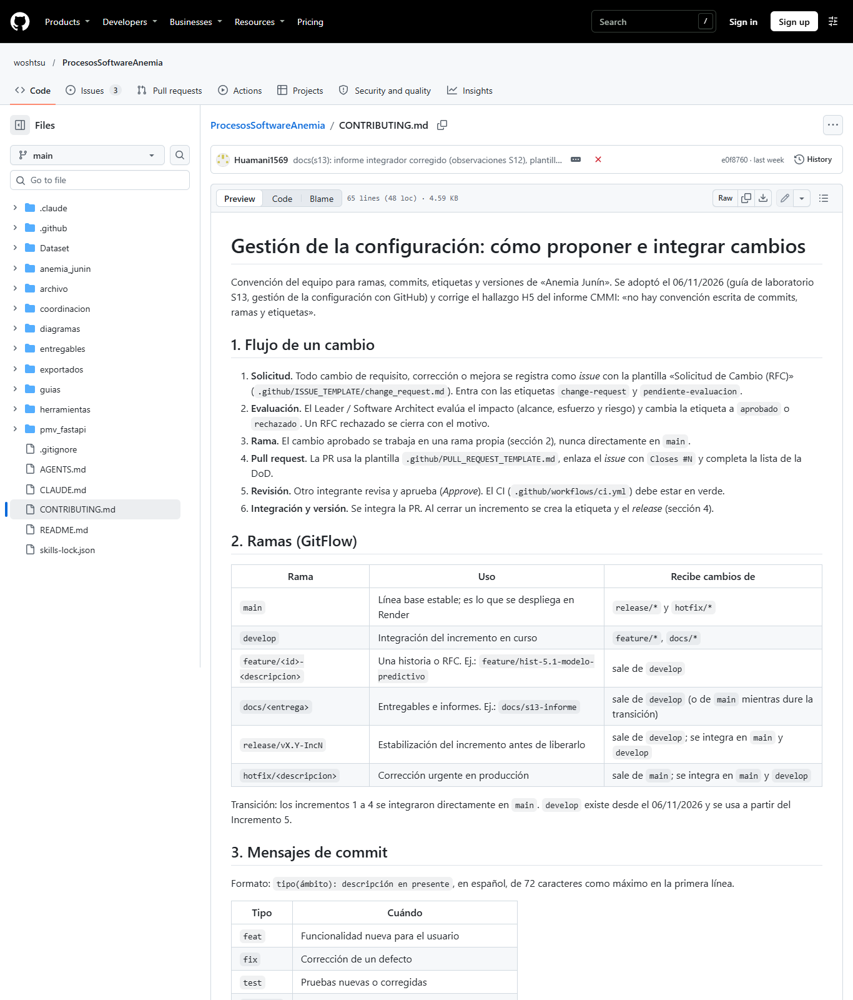
Figura 26. CONTRIBUTING.md: flujo del cambio, ramas de GitFlow, formato de commits tipo(ámbito): descripción, etiquetas y releases.
Lectura. GitFlow se aplicó en el PMV, se descuidó temporalmente en los incrementos 2 a 4 por presión de entregas, y fue formalmente retomado el 14/11 (noche): develop se sincronizó con main (PR #28), recibió la reorganización T-024 (PR #29) quedando en 0 2 delante de main, y se limpiaron 17 ramas remotas respaldando la historia en archivo/docs-s12-correcciones. El Incremento 5 se desarrollará completamente sobre esta base (dominio 7 del PDCA).
Desviación declarada. CONTRIBUTING.md prevé ramas release/* de estabilización, pero no se creó ninguna: main recibió las integraciones desde ramas feature/*, docs/*, hotfix/* y chore/* (Tabla 2), sin pasar por una rama de liberación. Las etiquetas se pusieron directamente sobre los commits de cada incremento.
6. Actividad 4: integración continua con GitHub Actions
6.1 Paso 4.1: workflow de integración continua
El proyecto usa Python, no Node.js, así que el workflow de la guía se adaptó paso por paso (Tabla 3). El pipeline .github/workflows/ci.yml tiene tres trabajos encadenados: calidad-y-pruebas → imagen → produccion. Este último solo corre en main.
Tabla 3. Correspondencia entre el workflow de la guía y el del proyecto.
| Paso de la guía | Paso en ci.yml |
|---|
on: pull_request: branches: [develop, main] | Igual, con un filtro paths (solo se dispara si cambian pmv_fastapi/** o ci.yml), más push a main, develop y feature/** con el mismo filtro, y workflow_dispatch |
| Checkout del código | actions/checkout@v4 |
Configurar entorno (setup-node) | actions/setup-python@v5 con Python 3.11 |
Instalación de dependencias (npm ci) | pip install -r requirements-dev.txt |
Verificación de linter (npm run lint) | ruff check y ruff format --check |
Pruebas unitarias (npm test) | pytest: unitarias, integración y arquitectura con cobertura (SQLite); integración contra PostgreSQL; E2E con Playwright |
| — | Construcción de la imagen Docker del PMV (trabajo imagen) |
| — | Verificación del esquema de producción y solicitud de despliegue a Render (trabajo produccion) |
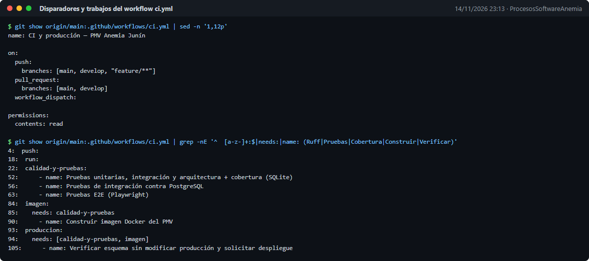
Figura 27. Disparadores y trabajos de ci.yml en main: dependencias needs entre trabajos y pasos de pruebas, imagen y despliegue.
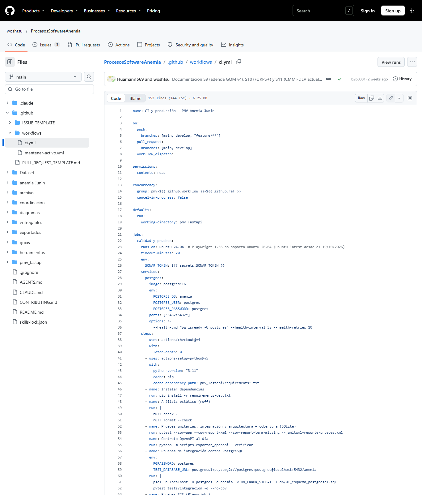
Figura 28. El archivo ci.yml en GitHub.
6.2 Ejecución del pipeline
CAPTURA OBLIGATORIA 5 · actividad4_github_actions_pipeline.png
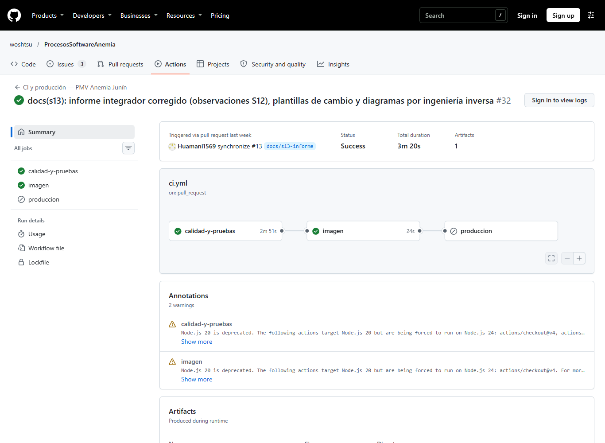
Figura 29. Ejecución #32 del pipeline, disparada por la PR #13: calidad-y-pruebas (2 min 51 s) e imagen (24 s) en verde; produccion se omite porque no es main. Estado Success y un artefacto (reportes-calidad).
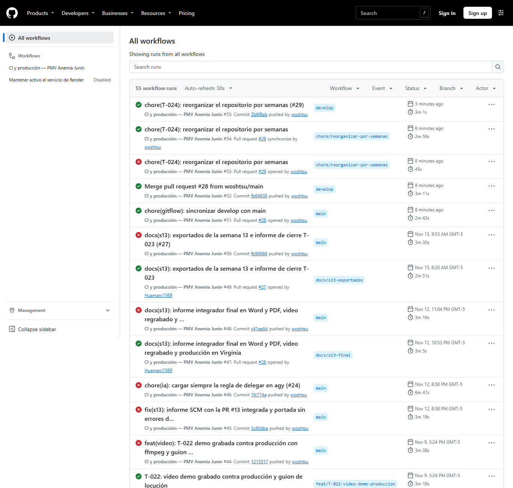
Figura 30. Pestaña Actions: historial de ejecuciones con su evento (PR o push), rama y estado.
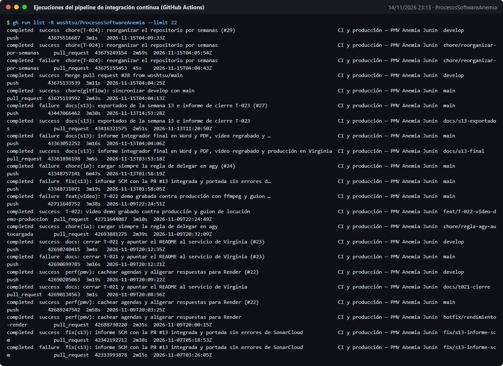
Figura 31. gh run list: las ejecuciones de PR terminan en verde; los push a main terminaban en rojo por la suspensión del servicio en Render. Se observan las nuevas ejecuciones de las PR #28 y #29 hacia develop.

Figura 32. Detalle de dos ejecuciones: en la de la PR #13 todo pasa; en la de main del 13/11 fallaba el paso de solicitud de despliegue en Render.
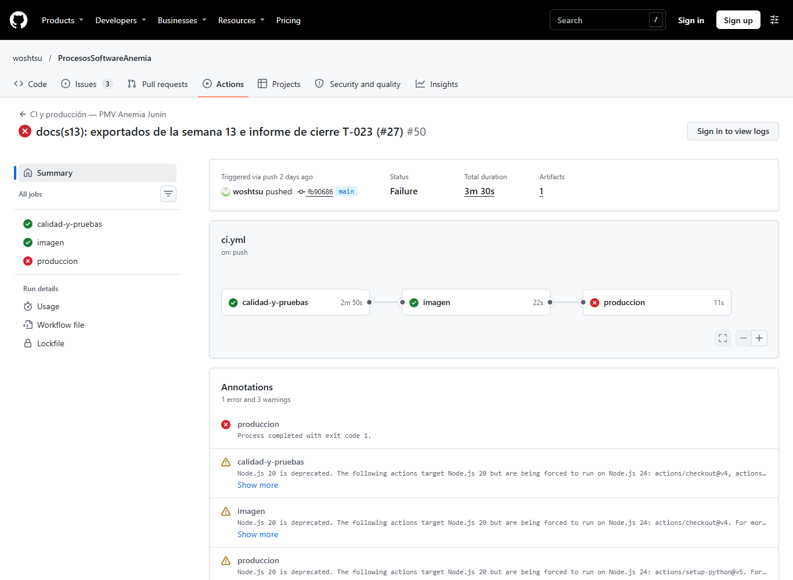
Figura 33. La ejecución fallida en GitHub: calidad-y-pruebas e imagen en verde, produccion en rojo («Process completed with exit code 1»).
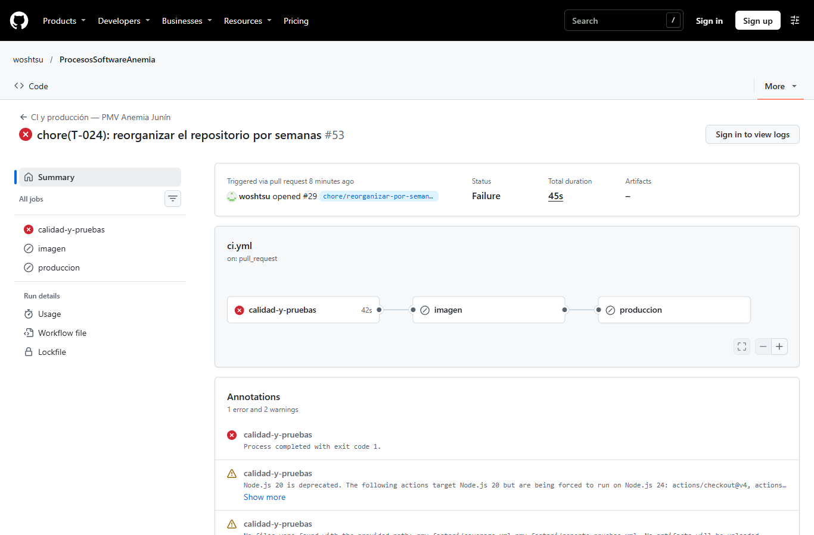
Figura 34. Primera ejecución de CI en la PR #29 (T-024): fallo en el paso de linter por formato de Ruff en pmv_fastapi/scripts/importador_diresa/config.py.
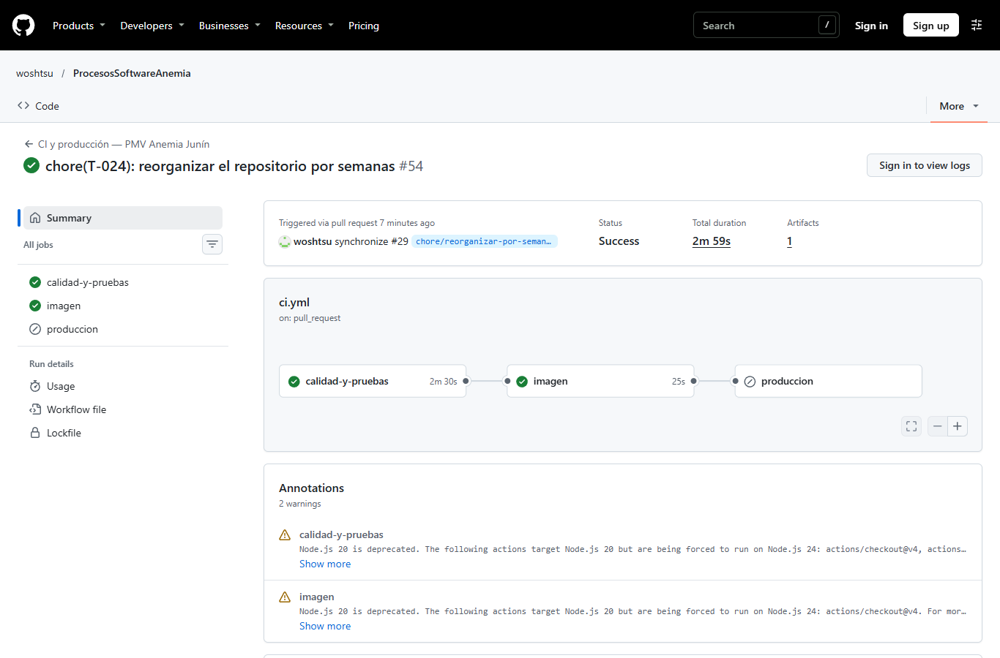
Figura 35. Ejecución de CI de la PR #29 en verde tras el commit de corrección de estilo style(T-024)..., previa a la integración en develop.
Verificación práctica del CI. Durante la integración de la PR #29 (T-024) se comprobó la eficacia de la compuerta de calidad: la primera ejecución falló en 45 segundos por un desvío de formato de Ruff en el importador de DIRESA (Figura 34). Se corrigió con un commit de estilo y la segunda ejecución pasó en verde (2 min 59 s, Figura 35) antes del merge. El Quality Gate de SonarCloud en la PR #29 marcó observación exclusivamente por duplicación en código nuevo (4,4 % > 3,0 %) derivada de scripts que fueron movidos de carpeta durante la reorganización; el hallazgo quedó documentado en los comentarios de la PR sin comprometer la seguridad ni la cobertura (dominio 9 del PDCA).
7. Actividad 5: versionamiento semántico y GitHub Releases
7.1 Paso 5.1: etiquetado semántico
Cada incremento tiene una etiqueta anotada con el formato vMAYOR.MENOR-IncN; el hito intermedio del Incremento 2 usa v1.5.0-inc2-avance. El hotfix de rendimiento en Render fue etiquetado como v4.0.1 sobre el commit e6d8c4c. Desviación respecto de la guía: salvo v4.0.1, las etiquetas no llevan el número de parche de vMAJOR.MINOR.PATCH (p. ej., v1.0-PMV en lugar de v1.0.0-PMV), y son anotadas (git tag -a), no firmadas con GPG. Comandos de la convención del equipo:
git checkout main && git pull origin main
git tag -a v4.0.1 -m "v4.0.1: hotfix de rendimiento en Render (PR #22): caché de agendas, límite de respuestas y pool de conexiones" e6d8c4c
git push origin v4.0.1
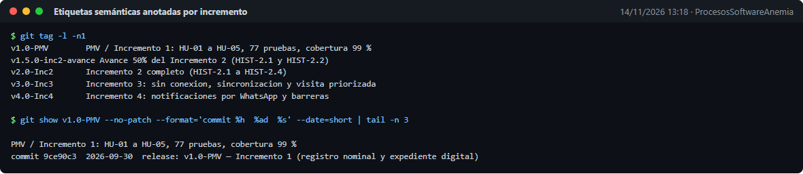
Figura 36. Etiquetas anotadas al corte de la tarde (14/11, 13:10): 5 etiquetas de incrementos, sin etiqueta semántica para el hotfix de la PR #22.
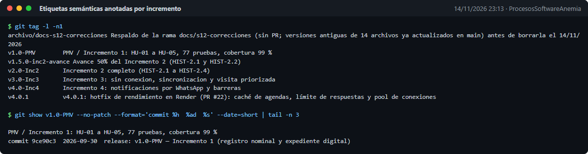
Figura 37. Etiquetas anotadas actualizadas (14/11, noche): incorporación de la etiqueta semántica v4.0.1 sobre e6d8c4c (PR #22) y la etiqueta archivo/docs-s12-correcciones para resguardo histórico.
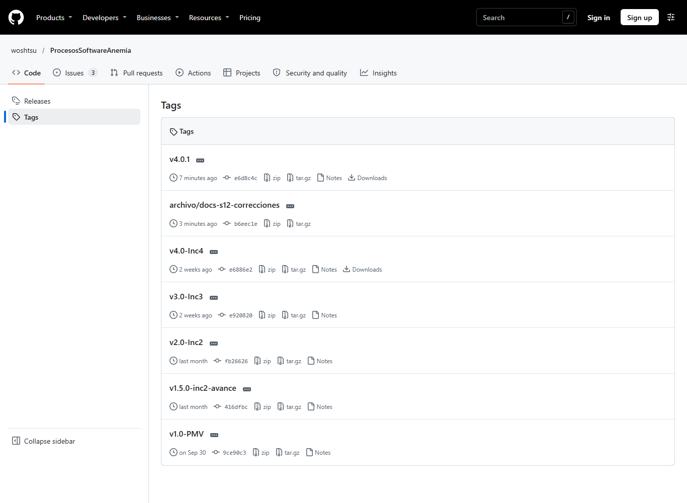
Figura 38. Página Tags del repositorio con los commits y paquetes de código fuente de cada etiqueta.
7.2 Paso 5.2: publicación de las releases
CAPTURA OBLIGATORIA 6 · actividad5_github_release_v1_0.png
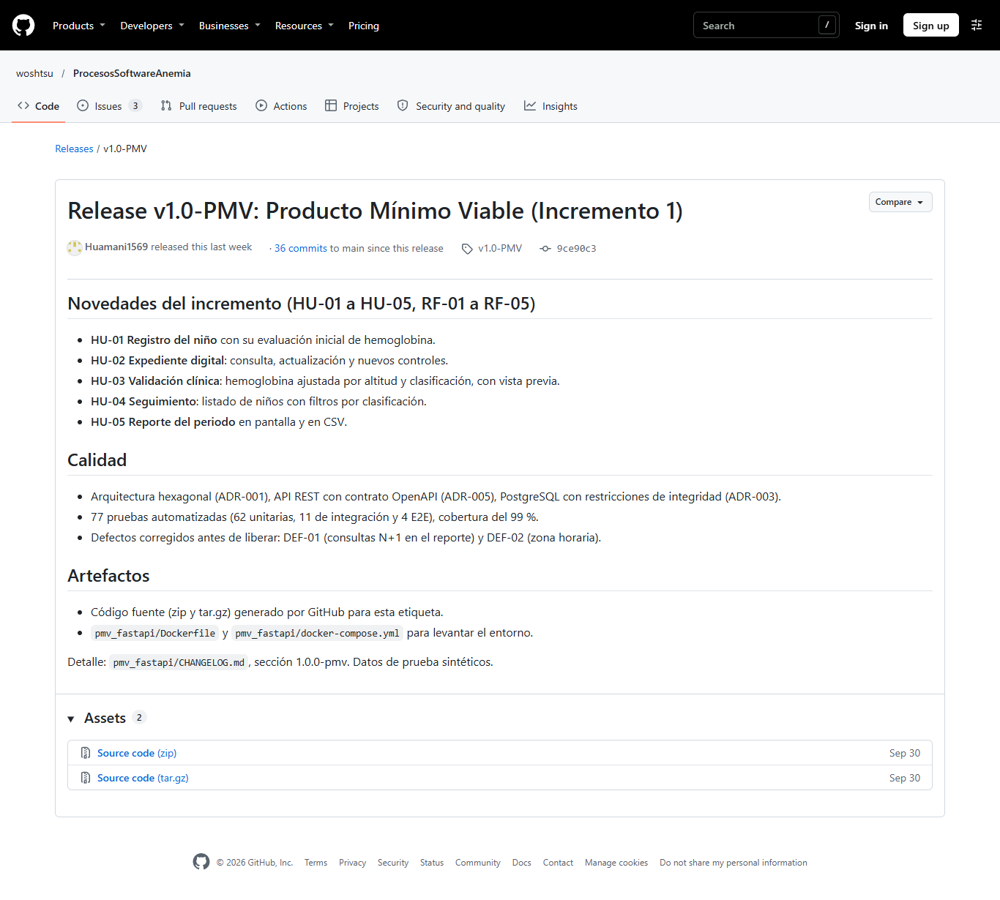
Figura 39. Release v1.0-PMV sobre el commit 9ce90c3: notas en tres bloques (novedades HU-01 a HU-05, calidad y artefactos) y los paquetes de código fuente (Assets).
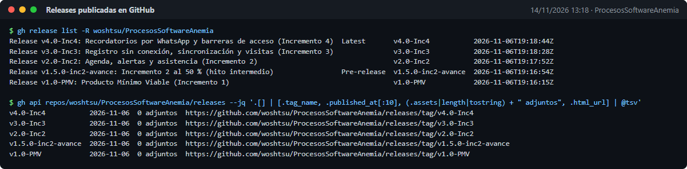
Figura 40. Consulta de releases al corte de la tarde (14/11, 13:10): cinco releases publicadas, todas con 0 artefactos adjuntos.
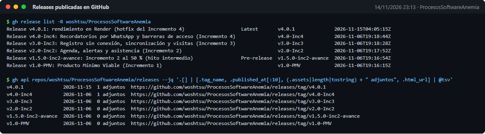
Figura 41. Consulta de releases tras acciones nocturnas (14/11, 23:00): seis releases publicadas; v4.0.1 y v4.0-Inc4 cuentan ahora con 1 artefacto adjunto de reportes de calidad.
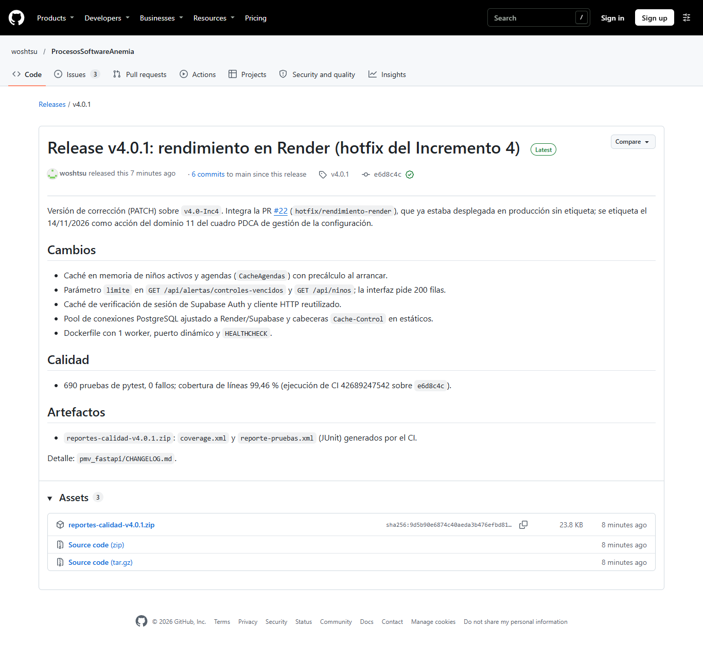
Figura 42. Nueva release v4.0.1 (Latest) publicada en GitHub con el artefacto reportes-calidad-v4.0.1.zip adjunto (24 331 bytes; 690 pruebas, 0 fallos, 99,46 % cobertura).
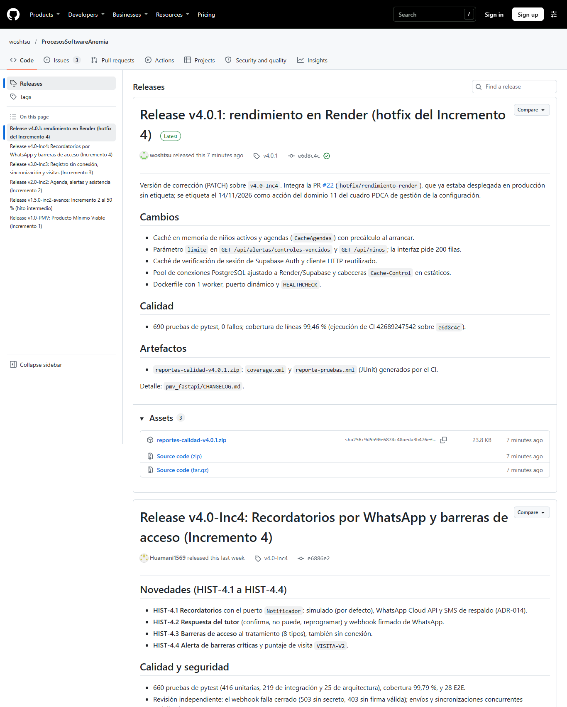
Figura 43. Página de Releases del repositorio.
Tabla 4. Fichas de las releases publicadas en GitHub (actualizada al 14/11/2026, 23:00; las seis publicadas, con el pre-release v1.5.0-inc2-avance del 06/11).
| Ficha | v1.0-PMV | v1.5.0-inc2-avance (pre-release) | v2.0-Inc2 | v3.0-Inc3 | v4.0-Inc4 | v4.0.1 (Nueva) |
|---|
| Título | Producto Mínimo Viable (Incremento 1) | Incremento 2 al 50 % (hito intermedio) | Agenda, alertas y asistencia | Registro sin conexión, sincronización y visitas | Recordatorios por WhatsApp y barreras de acceso | Rendimiento en Render (hotfix Inc. 4) |
| Commit | 9ce90c3 (30/09) | 5738231 (17/10) | fb26626 (18/10) | e920820 (30/10) | e6886e2 (30/10) | e6d8c4c (09/11) |
| Novedades | HU-01 a HU-05 | HIST-2.1 y HIST-2.2 | HIST-2.1 a 2.4 | HIST-3.1 a 3.4 y VIS-3.5 | HIST-4.1 a 4.4 | Hotfix PR #22: caché agendas, límite respuestas |
| Calidad | 77 pruebas, 99 % | — (no registrada en esta tabla) | 326 pruebas y 15 E2E | 499 pruebas (99,70 %), 24 E2E | 660 pruebas (99,88 % de líneas; 99,79 % con ramas), 28 E2E | 690 pruebas, 0 fallos (99,46 % líneas) |
| Artefactos | Código fuente (zip/tar.gz); 0 adjuntos | Código fuente (zip/tar.gz); 0 adjuntos | Código fuente (zip/tar.gz); 0 adjuntos | Código fuente (zip/tar.gz); 0 adjuntos | reportes-calidad-v4.0-Inc4.zip (22 933 bytes) | reportes-calidad-v4.0.1.zip (24 331 bytes; coverage + JUnit) |
Evolución del hallazgo. En la tarde, las cinco releases carecían de artefactos adjuntos y el hotfix de la PR #22 no tenía versión semántica. En la noche se publicó la release v4.0.1 como Latest adjuntando reportes-calidad-v4.0.1.zip, y se adjuntó el paquete de pruebas a v4.0-Inc4 (2 de 6 releases con artefactos). Queda pendiente publicar la imagen Docker del PMV en GitHub Container Registry (dominio 11 del PDCA).
8. Matriz de trazabilidad SCM unificada
Tabla 5. Matriz unificada de trazabilidad SCM (Cambio → Issue → Rama → PR y revisión → Etiqueta / Release → Artefacto o despliegue), actualizada al 14/11/2026, 23:00.
| ID solicitud de cambio / requisito | Issue en GitHub | Rama Git (GitFlow) | Pull request y code review | Tag semántico / release | Artefacto / despliegue |
|---|
| Requisitos PMV HU-01 a HU-05 | Sin issue (previo a Issues) | feature/hu03-…, feature/hu01-hu05-…, fix/def-0x-… → develop | PR #2 (integrada, sin revisión registrada) | v1.0-PMV | Docker de staging (docker-compose.yml) |
| Requisitos Inc. 2 HIST-2.1 a 2.4 | Sin issue | feature/inc2-agenda-alertas | PR #4 y #5 (sin revisión) | v1.5.0-inc2-avance, v2.0-Inc2 | Imagen Docker del CI |
| Requisitos Inc. 3 y 4 HIST-3.x, VIS-3.5, HIST-4.x | Sin issue | feature/inc3-sin-conexion | PR #8 (CI verde; sin aprobación de par: REVIEW_REQUIRED) | v3.0-Inc3, v4.0-Inc4 | Producción en Render (deploy hook del CI) |
| Observaciones del docente a S12 | #14 (implementado) | docs/s13-informe | PR #13 (CI verde; sin aprobación de par) | — (documentación) | Informe S13 (DOCX y PDF) |
| CMMI H2 y H5 (GitFlow y plantillas) | #15 (implementado) | docs/s13-informe | PR #13 | — | .github/, CONTRIBUTING.md, rama develop |
| CMMI H10 (ingeniería inversa) | #17 (implementado) | docs/s13-informe | PR #13 | — | generar_diagramas.py y diagramas v4 |
| Rendimiento en Render | Sin RFC | hotfix/rendimiento-render | PR #22 (CI verde; sin aprobación) | v4.0.1 | reportes-calidad-v4.0.1.zip + Render Virginia |
| Video de la demo (T-022) | Sin RFC | feat/T-022-video-demo-produccion | PR #25 (CI verde) | — | entregables/semana-12/video/ |
| Sincronización GitFlow | Cambio interno | main | PR #28 a develop (merge commit; excepción admin) | — | Línea base develop sincronizada |
| Reorganización del repositorio (T-024) | RFC por registrar | chore/reorganizar-por-semanas | PR #29 a develop (CI verde tras corrección Ruff; excepción admin) | — | Estructura modular por semanas y filtro paths en develop |
| T-025: Actualización SCM y PDCA | Observaciones docente S13 | docs/t025-scm-pdca | PR a develop (prevista 15/11/2026) | — | Informes SCM y PDCA actualizados |
| OWASP H-1 | #18 (aprobado) | feature/h1-roles-rls (prevista) | Pendiente | v4.1 (propuesta) | — |
| OWASP H-2 y H-3 | #19 (aprobado) | feature/h2-h3-cabeceras-csv (prevista) | Pendiente | v4.1 (propuesta) | — |
| Datos del INC-5 | #20 (aprobado) | feature/inc5-datos (prevista) | Pendiente | v5.0-Inc5 (hito H6) | Dataset versionado |
La trazabilidad es completa desde la rama hasta el despliegue. El tramo Cambio → Issue se fortaleció notablemente con la evaluación formal de las RFC #18, #19 y #20 por el Leader. La PR #22 quedó regularizada mediante la release v4.0.1.
9. Indicadores del proceso de gestión de la configuración
Los indicadores se calculan con el script del Anexo B y alimentan el cuadro PDCA de la semana 13, que ahora se centra en este proceso.
Tabla 6. Indicadores del proceso SCM (comparativa antes del 06/11, al 14/11 tarde y al 14/11 noche).
| Indicador | Antes del 06/11 | 06/11 a 14/11 (tarde) | Al 14/11 (noche) | Meta (23/11) | Figuras |
|---|
Integraciones en main por PR | 9/19 (47 %) | 9/9 (100 %) | 9/9 (100 %) | 100 % | 24, 25 |
| Commits convencionales | 13/60 (22 %) | 20/24 (83 %) | 9/11 (82 %)* | ≥ 95 % | 25 |
| RFC registradas | 0 | 7 | 7 | 1 por cambio | 3, 4 |
| RFC evaluadas (aprobado o implementado) | — | 0/7 (0 %) | 6/6 (100 %)** | 100 % | 5, 6, 7 |
| PR vinculadas a su RFC | 0/10 | 1/9 (11 %) | 1/11 (9 %) | 100 % | 14, 15 |
| PR con revisión aprobada de un par | 1/10 (10 %) | 0/9 (0 %) | 0/11 (0 %) | 100 % | 12, 14, 15 |
Rama main protegida por regla | No | No (desactivado) | Sí (ruleset activo) | Sí | 8, 9, 10 |
PR integradas a través de develop | 0 | 0 (5 detrás) | 2 (#28 y #29) | Todas del Inc-5 | 20, 22, 23 |
Ejecuciones de main con calidad en verde | — | 7/7 (100 %) | 7/7 (100 %) | 100 % | 31, 32 |
Ejecuciones de main con despliegue en verde | — | 1/7 (14 %) | 1/7 (14 %) | 100 % | 32, 33 |
| Releases con notas / con artefactos | 0 / 0 | 5 / 0 | 6 / 2 con artefactos | Artefacto en cada una | 39 a 42 |
* La columna de la tarde (20/24 y 13/60) es la medición oficial del hallazgo. Tras el borrado de 17 ramas remotas, git log --all ya no incluye sus commits y la salida final de la noche (evidencias/salidas_cli.json) da 9/11 (82 %) desde el 06/11 y 13/53 (25 %) antes de esa fecha.
** 6 de 6 evaluadas sin contar #16 (duplicado cerrado).
10. Autoevaluación con la rúbrica
La nota la asigna el docente. La autoevaluación se basa en las evidencias objetivas contrastadas en este informe.
| Criterio (5,0 puntos cada uno) | Nivel que se considera alcanzado | Evidencia a favor | Qué falta para «Excelente» |
|---|
| 1. Administración del cambio en GitHub | Bueno | Plantillas de RFC y PR (Figuras 1 y 11); 7 RFC reales (Tabla 1); 100 % de RFC evaluadas formalmente (Figuras 6 y 7); ruleset ownermerge activo para main y develop con protected: true (Figuras 8 y 10). | Registrar revisiones «Approved» efectivas de un par en las PR sin utilizar el bypass de administrador. |
| 2. Estrategia de ramificación y control SCM | Bueno | GitFlow documentado en PMV (Figura 17); reanudación en develop con PR #28 y #29 (Figuras 20, 22 y 23); 100 % de integraciones por PR (Figura 24); limpieza de 17 ramas remotas con tag de resguardo (Figura 21). | Aplicar GitFlow con rigor en todo el Incremento 5: los incrementos 2 a 4 no pasaron por develop. |
| 3. Versiones, tags y releases | Bueno | 6 etiquetas anotadas y 6 releases con notas completas (Figuras 37 y 41, Tabla 4); release v4.0.1 y v4.0-Inc4 con artefactos adjuntos de reportes de calidad (Figura 42). | Publicar la imagen Docker compilada en GitHub Container Registry en cada release sobre main. |
| 4. Trazabilidad integrada y repositorio | Excelente | Matriz unificada completa de 14 filas (Tabla 5); repositorio con historial trazable; auditoría reproducible mediante script automatizado con salidas en JSON (Anexo B). | Vincular formalmente con Closes #n toda PR de desarrollo hacia develop. |
11. Conclusiones y lecciones aprendidas
- La configuración existía; las acciones nocturnas cerraron el registro formal. El ruleset
ownermerge fue activado en main y develop con branch protection (protected: true) y excepción trazada para el administrador. Las solicitudes de cambio fueron evaluadas formalmente por el Leader (100 % evaluadas: 3 aprobadas y 3 implementadas).
- GitFlow se reanudó efectivamente sobre
develop. Se sincronizó develop con main mediante la PR #28 y se integró la reorganización T-024 mediante la PR #29 a través de develop. Se sanearon 17 ramas remotas, resguardando la historia previa en la etiqueta anotada archivo/docs-s12-correcciones.
- Las compuertas del CI operan con rigor técnico. La PR #29 demostró el filtrado en vivo de un desvío de formato de Ruff, el cual fue subsanado con un commit semántico antes de autorizar la integración.
- Una release cobra valor cuando incluye artefactos verificables. Se publicó
v4.0.1 regularizando el hotfix de producción y se incorporaron paquetes de reportes de calidad a v4.0.1 y v4.0-Inc4.
- La honestidad en la autoevaluación marca el siguiente paso del PDCA. Aunque el ruleset ahora exige 1 aprobación, las PR recientes se integraron por contingencia de administrador; lograr revisiones cruzadas aprobadas por un par sin recurrir al bypass es la meta prioritaria del Sprint 6.
12. Anexos
Anexo A. Correspondencia con las evidencias pedidas por la guía
| Captura de la guía | Archivo pedido | Archivo en el repositorio (entregables/semana-13/laboratorio-scm/evidencias/) | Figura |
|---|
| 1. Issue de solicitud de cambio | actividad1_issue_change_request.png | web_a1_issue_rfc_18.png | 3 |
| 2. Branch protection rules | actividad2_branch_protection_rules.png | web_a2_settings_rulesets.png (panel Settings del propietario) | 8 |
| 3. Pull request y code review | actividad2_pull_request_code_review.png | web_a2_pr9_aprobada.png | 12 |
| 4. Network graph de GitFlow | actividad3_gitflow_network_graph.png | web_a3_red.png | 18 |
| 5. Pipeline de GitHub Actions | actividad4_github_actions_pipeline.png | web_a4_run_pr13.png | 29 |
| 6. Release v1.0 | actividad5_github_release_v1_0.png | web_a5_release_v1_0.png | 39 |
Además de las 6 capturas obligatorias, el informe incluye 37 evidencias complementarias que contrastan el estado antes y después: 43 figuras en total.
Anexo B. Reproducibilidad de la auditoría
Las evidencias se generan con entregables/semana-13/laboratorio-scm/capturar_evidencias_scm.py. El script captura 26 páginas del repositorio con Microsoft Edge sin interfaz (Playwright; el panel Settings → Rulesets de la Figura 8 lo capturó el propietario a mano) y ejecuta 17 grupos de comandos git/gh, cuyas salidas guarda en evidencias/salidas_cli.json. Solo necesita permiso de lectura y no escribe nada en GitHub.
pmv_fastapi/.venv/Scripts/python.exe entregables/semana-13/laboratorio-scm/capturar_evidencias_scm.py
pmv_fastapi/.venv/Scripts/python.exe entregables/semana-13/exportar_pdf_s13.py scm
Anexo C. Enlaces directos a la suite de GitHub
- Repositorio: https://github.com/woshtsu/ProcesosSoftwareAnemia
- Solicitudes de cambio: https://github.com/woshtsu/ProcesosSoftwareAnemia/issues?q=label%3Achange-request
- Pull requests: https://github.com/woshtsu/ProcesosSoftwareAnemia/pulls?q=is%3Apr
- Integración continua: https://github.com/woshtsu/ProcesosSoftwareAnemia/actions
- Releases y etiquetas: https://github.com/woshtsu/ProcesosSoftwareAnemia/releases · …/tags
- Ramas y red: https://github.com/woshtsu/ProcesosSoftwareAnemia/branches · …/network
- Producción: https://softwareanemia-virginia.onrender.com